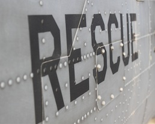

Rescue
As a USAF pararescueman (PJ) I was exposed to a variety of austere and non-permissive environments and rescue situations. The basis of my rescue knowledge comes from my time spent with the American Red Cross Volunteer Life-Saving Corps (ARCVLSC) and Jacksonville Beach Ocean Rescue, as well as my involvement in Lifeguards Without Borders. Each one of these experiences presented their own unique challenges which have given me a different, more well-rounded, approach to life.
ARCVLSC Positions:
- 2006: Recruit Surfman
- 2007: Surfman
- 2008: Registrar
- 2009-2011: Military Leave
- 2012: Mate
- 2013: Lieutenant (resigned)
Jacksonville Beach Ocean Rescue:
- 2006-2007: Surfman
- 2008: Assistant Rescue Swimmer
- 2012: Rescue Swimmer
Pararescue Training:
- USAF Pararescue Indoctrination Course
- USAF Combat Dive
- US Army Basic Airborne
- US Army Military Free Fall
- USAF Survival School
- National Registry Paramedic
- USAF Pararescue Apprentice Course